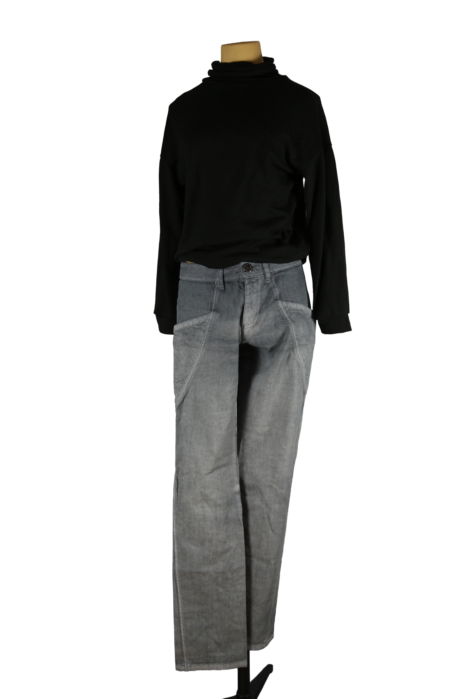

1 / 14Aus dem kuratierten Archiv von Disorder119. Charakteristische Hose von Jean Paul Gaultier in ausgewaschenem Grau. Das Design verbindet klassische Tailoring-Elemente mit funktionalen, fast architektonischen Linien. Auffällig sind die geschwungenen Nahtführungen an Hüfte und Bein, die dem Piece eine skulpturale Silhouette verleihen und gleichzeitig die Bewegung betonen. Der Stoff wirkt robust, dabei weich getragen, mit einer leicht strukturierten Oberfläche. Die Passform ist gerade bis leicht schmal, mit klar definierter Taille und ruhigem Fall über das Bein. Ein typisches Beispiel für Gaultiers spielerischen Umgang mit Konstruktion und Alltagskleidung. Details: Marke: Jean Paul Gaultier Farbe: Grau Größe: 30 Passform: Regular Verschluss: Reißverschluss und Knopf Material: Baumwoll-Elastan-Mischung Herstellungsland: Rumänien Fotografie & Passform: Das Kleidungsstück wurde auf unserer Standard-Schneiderpuppe fotografiert, die wir zur konsistenten Darstellung aller Kleidungsstücke verwenden. Maße der Schneiderpuppe: Brustumfang 89 cm Taillenumfang 66 cm Hüftumfang 89 cm Schulterbreite 38 cm Diese Maße dienen ausschließlich der visuellen Einordnung und werden nicht als Artikelmaße bezeichnet. Zustand: Gebraucht, guter Zustand mit leichten, altersüblichen Wasch- und Tragespuren. Rechtliche Hinweise: Verkauf als gebrauchtes Kleidungsstück. Die Beschreibung erfolgt nach bestem Wissen und Gewissen. Farbnuancen und Oberflächenwirkungen können aufgrund von Lichtverhältnissen bei der Fotografie sowie unterschiedlicher Bildschirmdarstellungen leicht vom Original abweichen. Disorder119 steht für sorgfältig kuratierte Designerstücke mit Fokus auf Authentizität, Qualität und zeitlose Relevanz.
Disorder119 · Kuratiertes Archiv für Designer-, Vintage- und Contemporary-Mode. Jedes Stück wird einzeln ausgewählt, fotografiert und beschrieben.